Menginstall dan Konfigurasi Wordpress dengan Database MySQL
Disini kita akan melakukan percobaan pada system operasi windows, maka hal yang perlu disiapkan yaitu berupa ;
- Xampp,
- Wordpress,
- Aplikasi Zip.
Xampp singkatan dari X (cross platform), A (Apache), M (MySQL/MariaDB), P (PHP), dan P (Perl).
Xampp adalah perangkat lunak berbasis web server yang bersifat open source. Salah satu fungsi menguji fitur dan mengakses website tanpa internet.
Wordpress adalah system manajemen konten (CMS) yang bisa digunakan untuk membuat dan mengelola website atau blog. Sistem WordPress berjalan menggunakan PHP dan database MySQL atau MariaDB.
1. Berikut Langkah dalam menginstall dan konfigurasi Xampp :
1. Download xampp pada link xampp download sesuaikan versi dengan perangkat Anda.
2. Klik saja Ok pada pop up yang muncul, hingga akan muncul windows setup wizard. Untuk components to install centang semua yang ada dipilihan.
3. Jika proses installasi telah berhasil, maka buka apk Xampp dan Start Apache beserta Mysql.
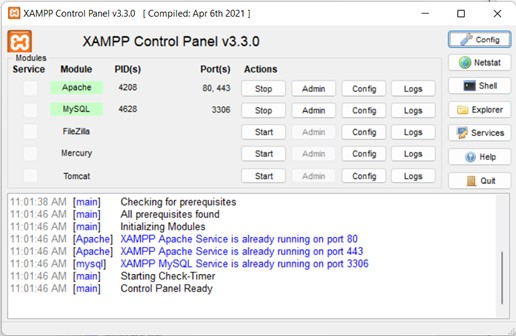
Jika tidak ada error maka kita dapat menguji dengan buka browser dan ketikkan http://localhost/dashboard/
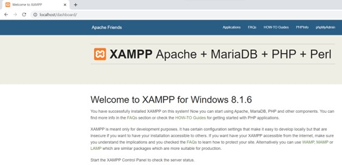
Untuk melihat Mysql kita apakah berhasil, buka browser dan ketikkan http://localhost/phpmyadmin/
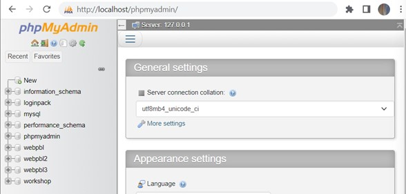
2. Berikut Langkah dalam menginstall dan konfigurasi Xampp :
1. Download file zip wordpress pada link wordpress.org
2. Lalu ekstrak file tersebut, namun file hasil ekstrak diletakkan di C:/xampp/htdoc
*) NB: Folder htdocs merupakan folder yang dipakai untuk menaruh file-file yang bisa dibuka di browser. Jika kita menaruh selain di folder ini, maka browser tidak akan bisa membukanya.
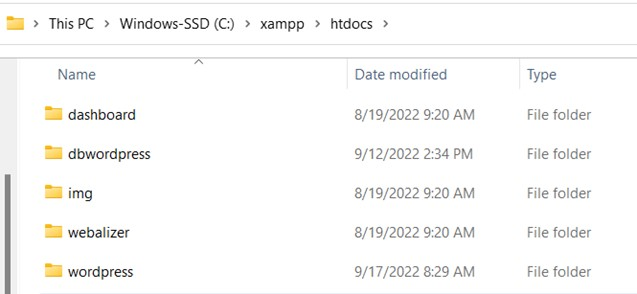
3. Selanjutnya buka pada browser Anda http://localhost/wordpress . wordpress yang terletak dibelakang tersebut adalah file hasil ekstrak dari file zip yang tadi. Namun hal tersebut dapat diubah jika Anda ingin membuat akun wordpress yang banyak.
4. Jika tampilan sudah seperti ini, saat nya kita melanjutkan dengan mebuat database di phpMyAdmin.
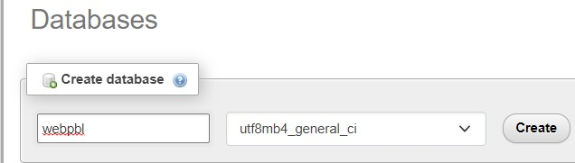
Membuat database dari phpmyadmin,masukkan nama database Anda setelahnya, klik Create
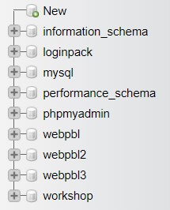
Jika berhasil maka nama database anda akan tertampil pada sisi bagian kiri.
Selanjutnya Kembali ke wordpress, jika tertampil seperti ini berarti file yang kita pindahkan ke htdoc berhasil.
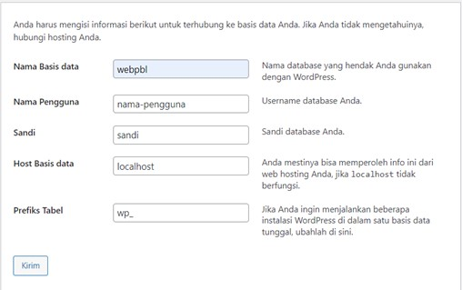
Masukkan nama database yang kita create sebelumnya, untuk nama-pengguna kita ubah menjadi root dan sandi biarkan kosong. Hal tersebut dikarenakan pada kita masuk kedalam phpMyAdmin dan membuat database kita masuk sebagai root dan tidak ada memasukkan password apapun.
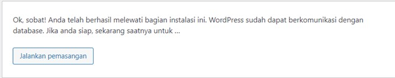 Klik jalankan pemasangan, maka akan tertampil, 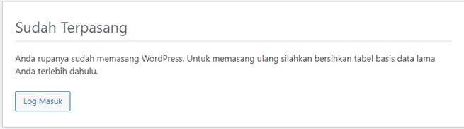
5. Jika semua udah maka kita login Kembali dengan akun yang telah kita buat tadi 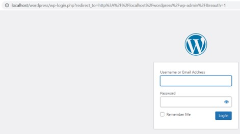 Tampilan dashboard ketika berhasil login. 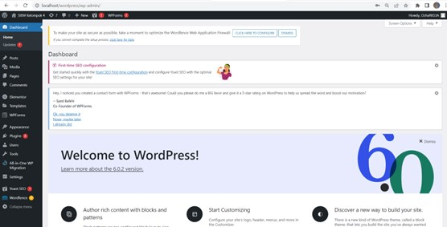
Sekian dan Terimakasih